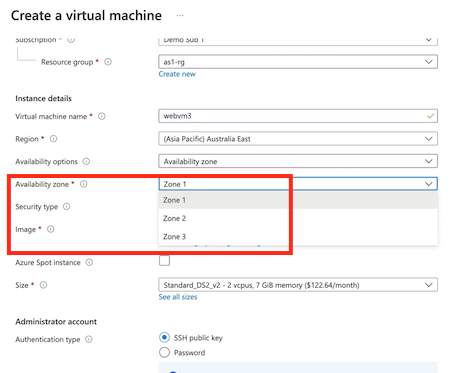

3 Networking Strateg / Connectivity & Security
1 Design a Networking Strategy
Isolated Networks
Secure, private, and isolated from other virtual networks.
Default Routing
Intra-VNet traffic, and outbound Internet is routed.
Multi-Zone Deployments
Supports zone-based resources within a region.

Hub-and-Spoke Network Architecture
Common network design for sharing centralized network resources and access.
Public Accessibility for Azure Services
Many Azure services are built for public accessibility.
-
Virtual Networking:
-
Virtual networks in Azure are fully isolated and secure by default.
- Default routing is configured when creating a virtual network, providing connectivity to the public internet and between subnets within the virtual network.
-
Virtual networks deployed in a multi-zone deployment can be accessed by resources pinned to availability zones within the same region.
-
Hub-and-Spoke Network Architecture:
-
Common network architecture for connecting and sharing centralized resources within a virtual network.
- Hub VNet contains shared resources like firewalls, ExpressRoute connectivity, VPN connections, etc.
-
Spoke VNets can connect to the hub VNet to access shared resources without the need to configure connectivity individually for each VNet.
-
Azure Services Accessibility:
-
Many Azure services are built for public accessibility by default, with public endpoints.
- Technologies exist to restrict and control access to public endpoints and provide more private connectivity for Azure services.
Additional Exam Key Points:
- Integrated networking services like service endpoints and private link.
- Hybrid networks including Azure Virtual WAN and ExpressRoute.
- Service networking considerations for deploying different services and providing them with connectivity to virtual networks.
- Securing services with resource firewalls.
- Various technologies for securely connecting to, integrating, and establishing hybrid connectivity for different types of services and networks.
1-2 Recapping Virtual Networks
Custom Routes
Examples of Custom Routes:
Blocking Internet Access
Using the None next hop type, we can block internet access.
Forcing Traffic via Another Address
Using various next hop types, we can force traffic elsewhere.
Configuration
Routes within a route table apply to associated subnets.
Routing Considerations
Special Scenarios and Configuration:
Automatic System Routes
System routes can be automatically generated (e.g., VNet peering).
Border Gateway Protocol (BGP)
BGP can help manage dynamic routing (e.g., ExpressRoute or VPN).
Matching Address Prefix Routes
The below precedence is used:
Custom > BGP > System
Network Security Groups (NSGs)
Traffic Filtering
Priority-based allow or deny rules are processed only until a single match is found.
Default Rules
All NSGs include a default DENY rule. There is one rule each for inbound and outbound traffic.
Assignment
Assigned to a subnet or NIC. Subnet assignments are similar to all NICs.

Shared Outbound Internet
Replaces the need for individual public IP addressing for outbound connectivity.
Public IP Addressing
Can address like a standard public IP. Also supports public IP prefixes.
Configuration
One NAT can be associated with one or more subnets within a VNet.
-
Routing:
-
Virtual networks have built-in connectivity between subnets and the internet, but custom routing can be used to change these pathways.
- Route tables can be created to alter pathways, such as blocking access to the internet or forcing traffic through a specific IP address.
- Network security groups and routing serve different purposes: routing controls pathways while network security groups filter traffic.
- Routes can be configured for various purposes like sending traffic via a virtual appliance, the internet, virtual network, or virtual network gateway.
-
Custom routes take precedence over BGP routes, which take precedence over system routes when conflicts arise.
-
Network Security Groups:
-
Network security groups filter traffic with priority-based rules, where lower number rules are processed first.
- Default deny rules exist on both inbound and outbound sides of network security groups.
- Rules need to be assigned to network security groups to take effect.
-
Network security groups at the subnet level apply to all network devices within that subnet.
-
Public IP Addresses and Network Security:
-
With standard public IP addresses, all traffic is blocked by default unless allowed through network security groups.
- Network security group rules are stateful, allowing outbound traffic and its corresponding inbound replies.
-
Even without a public IP address assigned, a virtual machine can still have internet access through other means like VPN or ExpressRoute.
-
Virtual Network NAT:
- Virtual Network NAT controls outbound connectivity for multiple devices within a subnet.
- It eliminates the need to configure outbound connectivity on a per-VM basis.
- Public IP addressing for outbound connectivity can be controlled using virtual network NAT, providing shared outbound internet control.
- Virtual network NAT can use single IP addresses or public IP prefixes to manage outbound IP addressing for resources.
1-3 Recapping Integrated Networks
-
VNet Peering:
-
Allows connecting multiple VNets securely.
- Provides low-latency, private IP address connectivity between virtual machines in different VNets.
- Supports peering across different subscriptions and regions.
- Limitations include non-overlapping address spaces and lack of transitive routing by default.
VNet Peering
Virtual networks have default connectivity, but are otherwise totally isolated.


- [V] Fast, low-latency private IP connectivity.
- [V] Supports cross-subscription connectivity.
-
[V] Supports cross-region connectivity.
-
[X] Address spaces cannot overlap.
- [X] Does not support transitive routing.
Service Endpoints
Service Endpoints:
- Provides secure connectivity to Azure resources.
- Configured at the subnet level for specific resource providers.
- Utilizes the Microsoft backbone for private connectivity.
- Does not offer private IP addressing but ensures secure pathway.

Configuring Service Endpoints
Configured per resource provider, per subnet, to provide secure connectivity,
System Routes
Optimal routes are added so that all resources within a subnet use the backbone.
Network Security
Resource firewall rules can be configured to allow/deny traffic.
Private Link
Private Link:
- Offers secure connectivity to supported Azure services.
- Enables creation of private endpoints with private IP addresses within a subnet.
- Allows for granular security by providing connectivity to specific resources.
- Supports connectivity to Azure services and custom solutions in different subscriptions.
- Provides enhanced security features compared to service endpoints, including DNS integration and private IP addressing.
Secure Network Connectivity:
Private Link Support
- Supported Azure services
- Customer/partner-managed services
Granular Security
Configure connectivity to specific resources (not a whole resource type)
Broad Accessibility
- Accessibility from on premises
- Access from peered virtual networks
- Accessing services in other region
Implementation in Azure Portal:
- Demonstrated VNet peering, service endpoints, and Private Link configurations in the Azure portal.
- Showed how to set up VNet peering for secure connectivity between virtual machines in different VNets.
- Illustrated the configuration of service endpoints to establish private backbone connectivity.
- Walked through the process of creating private endpoints using Private Link for secure connectivity to Azure services like storage accounts.


1-4 Recapping Hybrid Networks
Virtual Private Networking
Providing private, encrypted connectivity to Azure virtual networks.

-
Virtual Private Networking (VPN):
-
VPNs provide private connectivity across the internet to resources in a virtual network.
- Site-to-site VPN connects entire networks to an Azure Virtual Network, while point-to-site VPN allows users to connect to an Azure Virtual Network.
- VPN encryption ensures secure and isolated connections over the public internet.
- VPNs support hybrid connectivity, site-to-site, point-to-site, and VNet-to-VNet connections.
Virtual Private Networking
VNet Peering
- Designed for VNet-to-VNet connectivity.
- Supports cross-subscription, cross-region, cross-Azure AD tenant.
- Leverages Microsoft backbone for private IP address connectivity.
- Used for private, low-latency, limitless bandwidth connectivity.
VPN
- Designed for hybrid connectivity (site-to-site, point-to-site).
- Supports similar Vet connectivity (cross-subscription, cross-region)
- Requires a public IP address for the VPN termination point.
- Used where encryption and/or transitive routing is needed.
VNet Peering vs. VPN:
- VNet peering is designed for VNet-to-VNet interconnectivity, leveraging the Microsoft backbone for private IP address connectivity.
- VPN connections go over the public internet, requiring public IP addresses for termination points.
- VNet peering offers low latency and limitless bandwidth, while VPNs provide encryption and support transitive routing.
ExpressRoute
ExpressRoute can provide a more direct and secure connection to Microsoft cloud services.

ExpressRoute
- Provides secure connectivity to virtual networks and Microsoft 365.
- Does not traverse the public internet.
- Does not leverage encryption by default (IPsec and MACsec).
- Supports up to 10 Gbps (100Gbps with ExpressRoute Direct).
VPN
- Provides secure connectivity to virtual networks only.
- Traverses the public internet (between the point/site and Azure).
- Traffic is encrypted by default as part of an end-to-end tunnel (IPsec).
- Supports up to 10 Gbps.
ExpressRoute:
- ExpressRoute provides secure connectivity between on-premises networks and Azure Virtual Networks without using the public internet.
- It can also be used to connect to Microsoft 365 services securely.
- ExpressRoute does not require encryption by default, supports up to 100 gigabits per second connectivity, and offers direct network connections with ExpressRoute Direct.
Virtual WAN
Azure Virtual WAN helps to automate and optimize connectivity using the hub-and-spoke network architecture.

Azure Virtual WAN:
- Azure Virtual WAN automates and optimizes hub-and-spoke network topology, simplifying network management through software-defined networking.
- It streamlines connectivity between spoke virtual networks, remote users, branch offices, and head offices.
- Microsoft manages the Hub virtual network in Azure Virtual WAN on a per-region basis, simplifying global interconnectivity.
- Azure Virtual WAN allows for a simplified deployment and management experience for various types of connectivity scenarios, including branch-to-branch, branch-to-Azure, and VNet-to-VNet connections.
1-5 Designing Networks for Azure Services
VNet-Native Services

VNet-Native Services:
- Some services are ready to go and work with virtual networks by default.
- Examples include virtual machines, Azure Kubernetes service, and Azure App Service environments.
- Services like container instances can be deployed to a virtual network for private connectivity.
- VNet Peering can be used for access across virtual networks.
Net Integration

VNet Integration for Outbound Access:
- For services like Azure App Service that require outbound access to a virtual network, VNet integration is needed.
- VNet integration provides access from the app to the virtual network.
- Supported by standard and premium tiers, not free or basic tiers.
- Provides outbound access to a VNet.
- Supported by Standard or Premium tiers.
-
Supports function apps.
-
Doesn't support NetBIOS or SMB.
- Does not provide inbound app access.

Hybrid Connections for On-Premises Connectivity:
- For connectivity to on-premises resources, hybrid connections using Azure Relay service are utilized.
Resource Firewalls
Many networked Azure services provide access control through a resource firewall.


Resource Firewalls:
- Services like Azure SQL, storage accounts, Azure App Service, and key vaults have resource firewalls to control inbound access.
- Enabling a resource firewall creates a default deny rule, allowing only specified access.
- Options include allowing access from public IP addresses and setting up virtual network rules.
- Resource firewalls can be configured in the Azure portal for services like Azure App Service and storage accounts.

Design a Networking Strategy
Client Requirements:
- GOVGoods wants the solution migrated to a cloud-based scalable service, preferably platform as a service.
- They require staging functionality to test updates before production deployment.
- Connectivity must be maintained for on-premises manufacturing hardware without using the public internet.
Proposed Solution:
- Host the application on Azure App Service to minimize administrative overhead and utilize deployment slots for staging.
- Use ExpressRoute with private peering to connect on-premises environment to Azure.
- Implement PrivateLink to provide secure connectivity for on-premises manufacturing devices to the Azure App Service.
Azure App Service for Hosting
Leverage staging slots for C/CD requirements.
ExpressRoute for Private Connectivity
Leverage private peering to a Vet within the GOVGoods subscription.
Azure Private Link for Inbound Access to the App
Associate the private endpoint with the GOVGoods VNet.
Technologies Used:
- Azure App Service for hosting the application.
- ExpressRoute with private peering for secure connectivity.
- PrivateLink for connecting on-premises manufacturing hardware to the Azure App Service.
2 Design Connectivity and Security
Modern scaling Solutions
A more modern approach is to scale in and out based on demand.

-
Traditional vs. Cloud Model:
-
Traditional solutions involved hosting everything on a single server, with the risk of the entire solution going offline if the server fails.
-
Cloud solutions involve scaling out by adding duplicate copies of servers or services for high availability.
-
Scaling In and Scaling Out:
-
Scaling in involves adding more resources to a single server.
-
Scaling out involves adding duplicate copies of servers or services to distribute traffic and ensure high availability.
-
Load Balancers:
-
Load balancers provide a single entry point for applications and distribute traffic among healthy instances of servers.
-
They help in maintaining high availability and managing connectivity to multiple server instances.
-
Splitting Solutions into Tiers:
-
Cloud solutions allow splitting the solution into different tiers, such as web frontend and data backend, and scaling them independently based on demand.
-
Global Scalability:
-
To achieve global scalability, multiple copies of the solution are deployed across different regions.
-
Global traffic routing and load balancing are essential to manage connectivity and distribute traffic effectively.
-
Microsoft Products for Connectivity and Security:
-
Microsoft offers products to help with load balancing, controlling connectivity to regional and global services, and enhancing security for cloud solutions.
2-1 Recapping Azure Global Infrastructure
Azure regions

Region
- Low-latency connected data
- centers hosting services
Cross-Region Replication
Region pairs with replication
Geography
Geographic, data, and compliance boundary
Availability Zones
Availability Zone
Physically separate location within a region.
Zonal Services
Some services can be pinned to a specific availability zone.
Zone-Redundant Services
Some services are replicated across availability zones.

Availability Sets
Availability Set
Group duplicate VMs together to avoid common outages.
Fault Domain Hardware that shares common sources of failure.
Update Domain
Platform services updated/restarted by Microsoft.

Here is a summary of the key points for the AZ-305 exam based on the provided article:
-
Azure Load Balancer:
- Used for providing public connectivity to web applications deployed to backend resources.
- Distributes traffic to healthy backend resources based on configured health probes.
- Enables outbound public internet connectivity using public IP or IP prefix.
-
Azure Application Gateway:
- Similar to Azure Load Balancer but specifically designed for web application solutions.
- Layer 7 aware, can route based on host name and path-based routing.
- Can load balance across multiple components in different backend pools.
-
Traffic Manager:
- Designed for globally distributed solutions.
- Ensures users are routed to the closest backend resources based on routing methods.
- Uses DNS for routing, confirms resource health, and responds with a DNS response to guide users directly to backend resources.
-
General Load Balancing Concepts:
- Load balancers like Azure Load Balancer and Application Gateway are region-specific.
- Load balancers distribute traffic to backend resources based on health and routing rules.
-
Exam Topics:
- Understand the differences between Azure Load Balancer, Application Gateway, and Traffic Manager.
- Know how each service functions and their use cases in load balancing applications.
- Be familiar with configuring and managing these load balancing services in Azure Portal.
These key points should help you prepare for the AZ-305 exam focusing on load balancing technologies in Azure.
Designing Highly Available Connectivity
Azure Load Balancer
Distributing Layer 4 connectivity to resources within a region.
Layer 7 application-aware load balancing

1.Azure Load Balancer:
- Distributes Layer 4 connectivity to resources within a single region.
- Uses TCP and UDP protocols.
- Can be internal (private within a virtual network) or public for outbound internet connectivity.
- Balances connectivity across redundant backend resources within a region.
2.Azure Application Gateway (App Gateway):
- Layer 7 aware load balancer for web application solutions.
- Capable of routing based on hostnames and paths.
- Can load balance across multiple backend pools for different components of a solution.
- Used for distributing load across web applications hosted in different regions.
3.Traffic Manager:
- For globally distributed solutions, unlike region-specific load balancing.
- Requires backend resources to be publicly accessible.
- Routes users based on routing methods such as proximity, priority, or network location.
- Uses DNS for routing and responds with a DNS response to guide users to backend resources directly.
Traffic Manager
Azure Front Door Service Overview:
- Azure Front Door is a global load balancer designed specifically for web applications,
- offering web functionality, caching, and acceleration capabilities.
- It leverages Microsoft's global network to provide faster access to web applications across the globe.
- Functions as a global application gateway, enabling web application acceleration and delivery worldwide.
Key Features and Configuration:
- Uses origin groups similar to backend pools in Application Gateway for defining backend endpoints.
- Supports various backend endpoints, built-in health probes, and load balancing.
- Allows path-based routing for directing traffic to specific backend endpoints based on URL paths.
- Offers Layer 7 functionality for advanced routing capabilities.
- Provides options for configuring caching, security features like web application firewall, and custom routing rules.
- Supports load balancing and Layer 7 capabilities for routing traffic efficiently.
Azure Front Door vs. Azure Traffic Manager:
- Azure Traffic Manager is more similar to a global load balancer supporting various protocols, while Azure Front Door is tailored for web applications, HTTP, and HTTPS.
- Traffic Manager uses DNS for routing user requests directly to endpoints, while Front Door accelerates web traffic through Microsoft's endpoint network.
- Traffic Manager routes traffic directly to endpoints, whereas Front Door proxies traffic at the Microsoft edge, enhancing performance and load balancing.
- Both services offer routing methodologies based on proximity, priority, or weighted lists, but Front Door additionally supports session affinity routing.
- Front Door provides advanced Layer 7 features like rate-limiting, IP-based ACLs, and integration with web application firewall for enhanced security and performance.
- Front Door can be more expensive due to its additional Layer 7 capabilities compared to Traffic Manager.
Distributing traffic to resources across Azure regions using DNS.


Traffic Manager vs. Front Door
Traffic Manager
- Supports several protocols.
- Routes traffic by responding to DNS queries based on routing method.
- Traffic is routed directly.
- Routing: performance, priority, weighted, geo, and multi-value
- Simply routes to healthy endpoints (pricing is accordingly simple).
Front Door
- Supports HTTP/S.
- Accelerates web traffic through Microsoft's edge network.
- Traffic is proxied at the edge.
- Routing: latency, priority, weighted, and session affinity
- Adds Layer 7 features, rate-limiting, and IP-based ACLs.